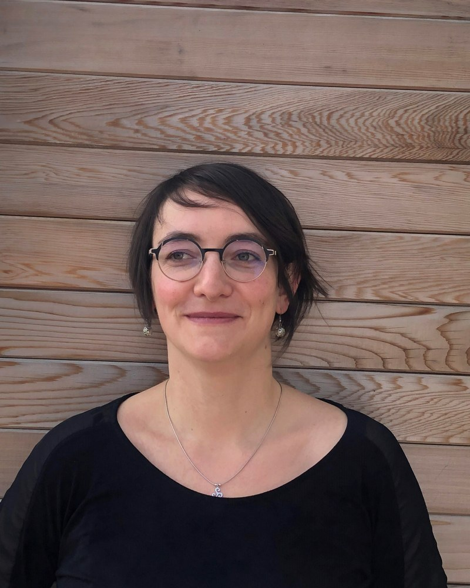

Écologie marine, écotoxicologie et coordination scientifique — je conçois des protocoles de suivi, j'analyse des données environnementales et je fais dialoguer chercheurs, gestionnaires et décideurs publics autour de la protection des milieux marins.

Docteure en océanographie, je travaille depuis plus de quinze ans sur les pressions environnementales et anthropiques qui s'exercent sur les écosystèmes marins et littoraux — des ports méditerranéens aux eaux du Saint-Laurent, en passant par les Antilles et le golfe de Gascogne.
J'aime les projets qui relient le terrain, la donnée et la décision : suivis écologiques et embarquements en mer, analyses statistiques et développement d'outils de visualisation (R, Shiny), gestion d'équipes et de budgets européens, et restitution des résultats aux acteurs locaux, aux politiques publiques et au grand public.
Du terrain à la donnée, en passant par la gestion de projet et l'enseignement.
Mammifères marins, milieux marins et littoraux, écophysiologie, pressions environnementales et anthropiques.
Statistiques écologiques (variances, corrélations, régressions, ACP), R, interfaces Shiny, SIG QGIS.
Suivis écologiques, embarquements en mer, prélèvements d'échantillons, dissection, plongée.
Coordination scientifique et administrative, budgets européens, comités techniques, dialogue avec les acteurs locaux et nationaux.
Co-direction de stages (BTS à Master), tutorat, supervision de doctorants, cours en Licence et Master.
Évènements grand public, organisation de colloques, communication scientifique.
15+ articles à comité de lecture, 2 chapitres d'ouvrage, 20+ communications en congrès.
Liste complète (articles, rapports, communications) dans le CV complet en PDF.
Disponible pour des collaborations en écologie marine, écotoxicologie et analyse de données environnementales.